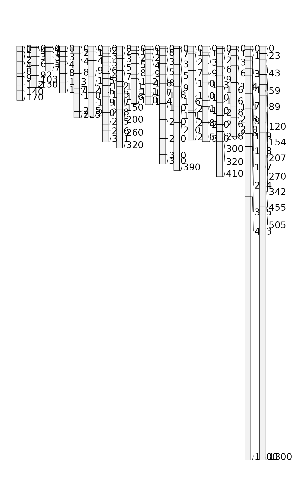

A collection of 18 soil profiles, consisting of select soil morphologic attributes, associated with a stratigraphic study conducted near Honcut Creek, California.
Format
A data frame with 154 observations on the following 21 variables.
- id
profile id
- surface
dated surface
- top
horizon top in cm
- bottom
horizon bottom in cm
- bound_distinct
horizon lower boundary distinctness class
- bound_topography
horizon lower boundary topography class
- name
horizon name
- texture
USDA soil texture class
- prop
field-estimated clay content
- structure_grade
soil structure grade
- structure_size
soil structure size
- structure_type
soil structure type
- stickiness
stickiness
- plasticity
plasticity
- field_ph
field-measured pH
- hue
Munsell hue
- value
Munsell value
- chroma
Munsell chroma
- r
RGB red component
- g
RGB green component
- b
RGB blue component
- soil_color
R-friendly encoding of soil color
Source
Busacca, Alan J.; Singer, Michael J.; Verosub, Kenneth L. 1989. Late Cenozoic stratigraphy of the Feather and Yuba rivers area, California, with a section on soil development in mixed alluvium at Honcut Creek. USGS Bulletin 1590-G.
Examples
# keep examples from using more than 2 cores
data.table::setDTthreads(Sys.getenv("OMP_THREAD_LIMIT", unset = 2))
data(sp2)
# convert into SoilProfileCollection object
depths(sp2) <- id ~ top + bottom
# transfer site-level data
site(sp2) <- ~ surface
# generate a new plotting order, based on the dated surface each soil was described on
p.order <- order(sp2$surface)
# plot
par(mar=c(1,0,3,0))
plot(sp2, plot.order=p.order)

# setup multi-figure output
par(mfrow=c(2,1), mar=c(0,0,1,0))
# truncate plot to 200 cm depth
plot(sp2, plot.order=p.order, max.depth=200)
abline(h=200, lty=2, lwd=2)
# compute numerical distances between profiles
# based on select horizon-level properties, to a depth of 200 cm
d <- NCSP(sp2, vars=c('prop','field_ph','hue'), maxDepth = 100, k = 0)
#> Computing dissimilarity matrices from 18 profiles
#> [0.4 Mb]
#> cache: 47 | slices: 100
# plot dendrogram with ape package:
if(require(ape) & require(cluster)) {
h <- diana(d)
p <- as.phylo(as.hclust(h))
plot(p, cex=0.75, label.offset=0.01, font=1, direct='down', srt=90, adj=0.5, y.lim=c(-0.125, 0.5))
# add in the dated surface type via color
tiplabels(col=as.numeric(sp2$surface), pch=15)
# based on distance matrix values, YMMV
legend('topleft', legend=levels(sp2$surface), col=1:6, pch=15, bty='n', bg='white', cex=0.75)
}
#> Loading required package: ape
#> Loading required package: cluster